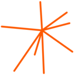
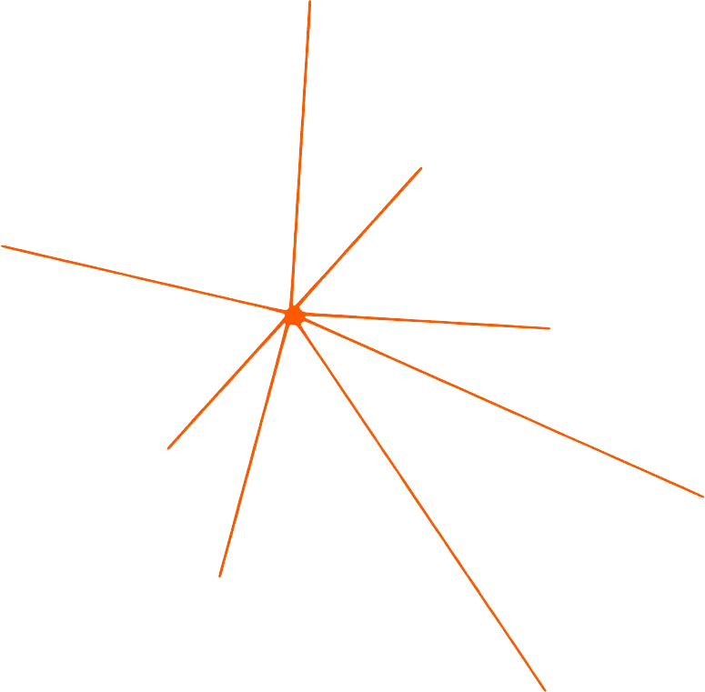
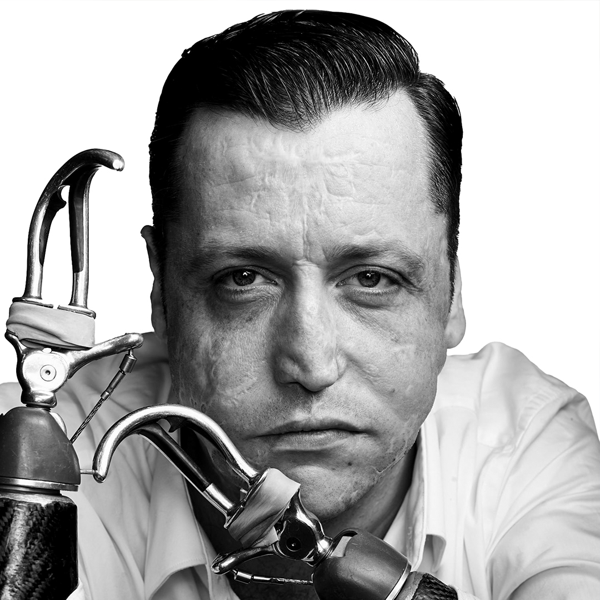

Este portal reúne as definições visuais extraídas do projeto da Optimism Company do Simon Sinek. Explore os tokens de cores, regras de tipografia, componentes de UI, padrões de layouts, espaçamentos e efeitos de movimento documentados diretamente das folhas de estilo e computações originais do navegador.
Paleta cromática oficial e superfícies utilizadas para compor a estética premium e aconchegante da marca.
A tipografia combina a elegante fonte serifada Garton Pro para títulos com a Union (sans-serif) para corpos de texto legíveis.
Leaderful é um aplicativo desenvolvido do zero para ajudar a formar o tipo de líderes que o mundo mais precisa.
| Seletor | Fonte | Tamanho | Peso | Altura Linha |
|---|---|---|---|---|
| h1 | Garton Pro | 54px | 700 | 54px |
| h2 | Garton Pro | 33.75px | 700 | 40.5px |
| h3 | Garton Pro | 27px | 700 | 36px |
| p | Union (Sans) | 20.25px | 400 | 31.5px |
| button | Garton Pro | 15.75px | 500 | 22.5px |
Detalhamento dos estilos de bordas utilizados para segmentar seções e realçar cartões interativos.
Bandeiras, botões, campos de entrada de formulários e estados interativos padronizados.
Módulos de visualização de conteúdo estruturados em malhas responsivas de 3 colunas e 2 colunas.
Exemplo de bloco interativo de três colunas para expor os caminhos e produtos da empresa.
Saiba MaisExemplo de Cartão de Podcast Horizontal com layout em linha flexível
Detalhes de animações de zoom, transições de preenchimento de cor em botões e menus dinâmicos com suavidade espacial.
Mapeamento dos ícones Lucide estruturados com marcas vetoriais semânticas e componentes sociais (currentColor).
O Leaderful é um aplicativo desenvolvido do zero para ajudar a formar o tipo de líderes que o mundo mais precisa.
Saiba Mais
Por meio de aprendizado, experiências e treinamento.
Um aplicativo de liderança com lições rápidas de Simon e dos Instrutores Otimistas. Ferramentas práticas para liderar, se comunicar e construir confiança - onde quer que você esteja.
Explorar o LeaderfulPalestras, workshops e aulas particulares que levam Habilidades Humanas para equipes e organizações de todos os tamanhos. Presencial e online.
Explorar ExperiênciasUm programa de treinamento para mentores que desejam ajudar pessoas e organizações a descobrir seu PORQUÊ. Aprenda a facilitar o processo de Descoberta do PORQUÊ.
Saiba Mais sobre a Escola do PORQUÊReceba insights semanais sobre liderança, otimismo e como construir um mundo melhor para todos.
“Trabalhar duro por algo de que não gostamos se chama estresse. Trabalhar duro por algo que amamos se chama paixão.”
Simon Sinek
Como Deixar de Ser Socialmente Estranho (Segundo a Ciência) com a Cientista Comportamental Vanessa Van Edwards

Pare de Dizer que Tudo Acontece por uma Razão com Tom Nash
A Real Razão pela qual Você se Sente Vazio (Mesmo quando a Vida Parece Ótima) com o Músico Mike Posner
Por que os Jovens Não Têm 'Fome' de Trabalho (E o que os Líderes Precisam Ouvir) com a Especialista em Gerações Dra. Eliza Filby
7 de maio de 2026
Elogios vagos não ensinam nada a ninguém. E ainda nos perguntamos por que o reconhecimento nunca parece surtir o efeito esperado.
6 de maio de 2026
A maioria dos debates que andam em círculos não é sobre as opções em si. É sobre a ausência de um critério compartilhado.
6 de maio de 2026
Quanto mais autoridade carregamos, mais pesado é o impacto de nossas palavras. E, às vezes, a coisa mais generosa que podemos oferecer é deixar esse peso de lado e apenas estar presentes.